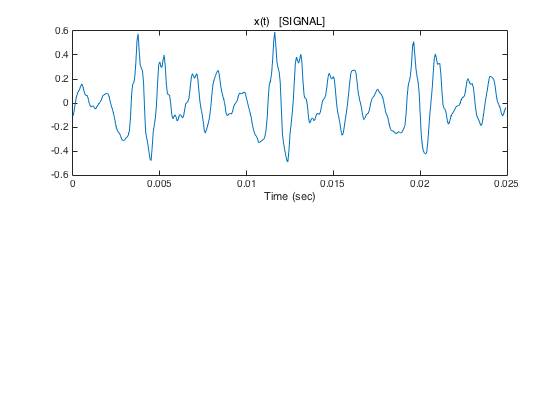
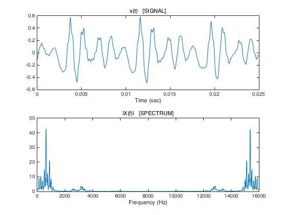
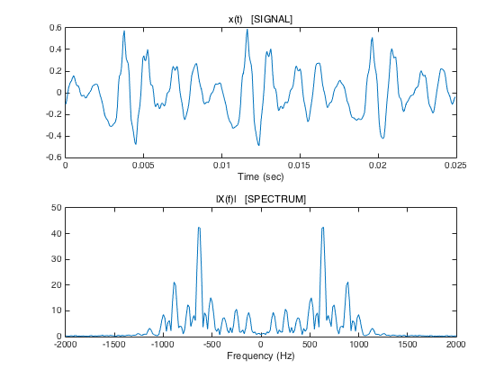
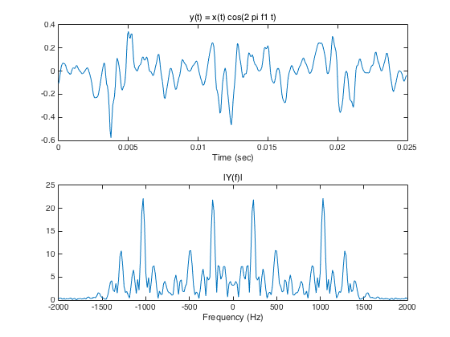
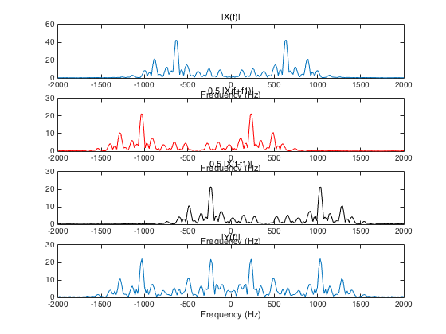

demo_1: Amplitude modulation (AM)
of speech signal. Illustration of time-domain signals and frequency-domain spectra
Contents
Load audio signal
[v, fs] = audioread('author.wav'); fs % sampling frequency (samples/second) N = 400; n = 0:N-1; t = n/fs; x = v(1660 + n)'; figure(1) clf subplot(2, 1, 1) plot(t, x) xlabel('Time (sec)') title('x(t) [SIGNAL]')
fs =
16000
 Plot spectrum
Nfft = 1024; X = fft(x, Nfft); f = (0:Nfft-1)/Nfft * fs; figure(1) subplot(2, 1, 1) plot(t, x) xlabel('Time (sec)') title('x(t) [SIGNAL]') subplot(2, 1, 2) plot(f, abs(X)) xlabel('Frequency (Hz)') title('|X(f)| [SPECTRUM]')
Plot spectrum with dc in center
Note that the X(f) is symmetric.
figure(1) subplot(2, 1, 1) plot(t, x) xlabel('Time (sec)') title('x(t) [SIGNAL]') subplot(2, 1, 2) plot(f-fs/2, fftshift(abs(X))) xlabel('Frequency (Hz)') title('|X(f)| [SPECTRUM]') xlim([-2000 2000])
Amplitude modulation
Perform amplitude modulation of x(t) by multipying by cosine function. This shifts the spectrum X(f) both left and right, and adds them.
f1 = 400; y = x .* cos( 2 * pi * f1 * t ); Y = fft(y, Nfft); figure(2) subplot(2, 1, 1) plot(t, y) xlabel('Time (sec)') title('y(t) = x(t) cos(2 pi f1 t)') subplot(2, 1, 2) plot(f-fs/2, fftshift(abs(Y))) xlabel('Frequency (Hz)') title('|Y(f)|') xlim([-2000 2000])
This plot emphasizes that Y(f) is X(f) shifted both left and right.
figure(3) clf subplot(4, 1, 1) plot(f-fs/2, fftshift(abs(X))) xlabel('Frequency (Hz)') title('|X(f)|') xlim([-2000 2000]) subplot(4, 1, 2) plot( f-fs/2 - f1, fftshift(abs(X))/2, 'r' ) xlabel('Frequency (Hz)') title('0.5 |X(f+f1)|') xlim([-2000 2000]) subplot(4, 1, 3) plot(f-fs/2 + f1, fftshift(abs(X))/2, 'k' ) xlabel('Frequency (Hz)') title('0.5 |X(f-f1)|') % legend('0.5 |X(f-f1)|', '0.5 |X(f+f1)|') xlim([-2000 2000]) subplot(4, 1, 4) plot(f-fs/2, fftshift(abs(Y))) xlabel('Frequency (Hz)') title('|Y(f)|') xlim([-2000 2000]) orient tall print -dpdf demo_1
It is expected that the overlapping of the shifted spectrum leads to distorted sound.
% Can we shift the spectrum to higher frequencies without overlapping the spectrum ? % We need to shift the positive half to the right right and % we need to shift the negative half to the left ... % Lets try using a filter with a single side band. It will have to be % a complex filter. (complex coefficients).